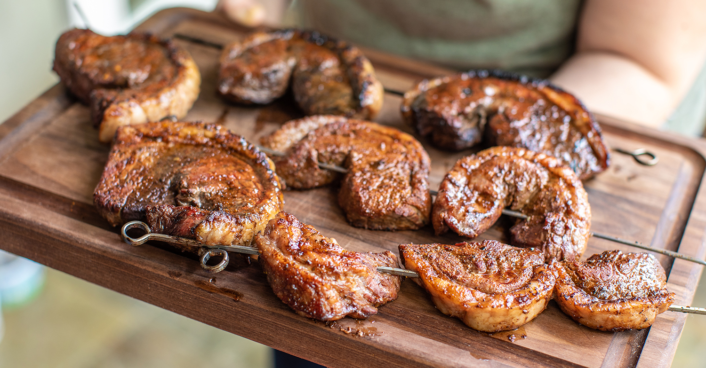

Meowscular Chef's Platter: Picanha Skewer

Image source
Description
Serves: 8-10
Ingredients:
- 2-3 lb or 1-1,4 kg Picanha (rump cap)
- Kosher salt
- Freshly ground black pepper
Steps:
- Cut cross-hatches across the fat cap of the beef.
- Slice the beef into 1.5 - 2 inch portions across the grain of the meat.
- Roll the beef into a C-shape and skewer.
- Season the beef on all sides with salt and black pepper.
- Grill for 10 minutes on each side or until the meat reaches your desired doneness.
Back to main